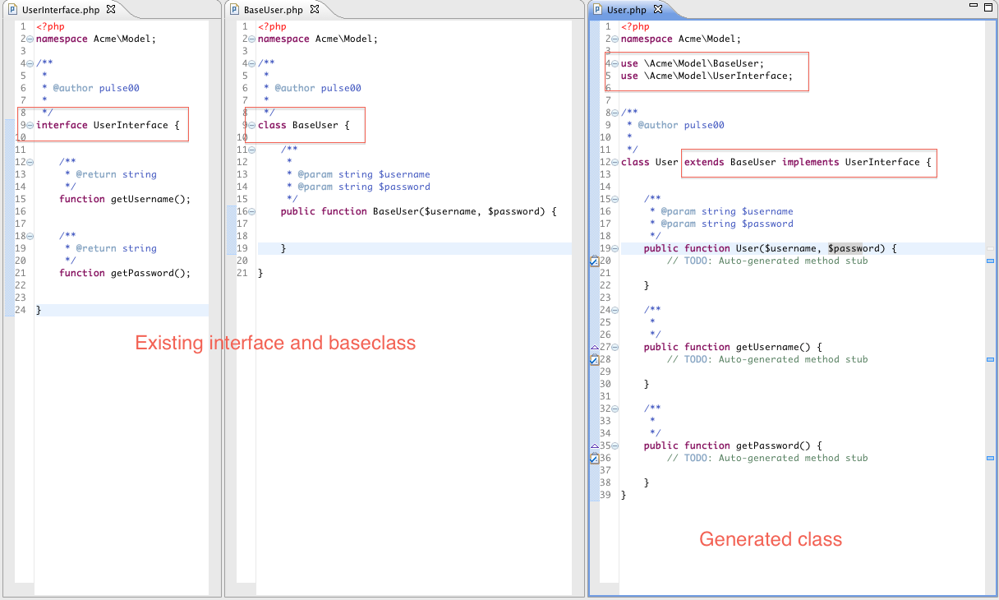
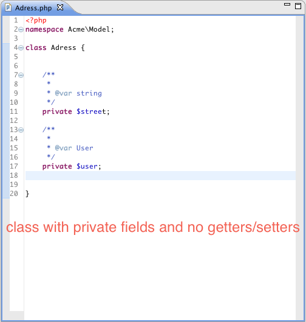

PHP Development Tools (PDT) Extensions
The PDT Extensions Plugin provides some additional (OOP) features for the Eclipse PHP Development Tools.
- Class Generation Wizard
- Getter/Setter Generation
- Generate missing Interface methods
- Advanced AST based code formatting
To install the plugin, simple add the updatesite to your eclipse installation and install the "PDT Extensions Feature":
The "PHP Class" action can be found in the "New" context menu when right clicking on packages in the PHP project explorer.
To create Getters/Setters for class fields, use the "Generate Getters and Setters" from the "Source" entry in the top menu bar.

Classes that miss implemented interface methods will show a validation warning. Press Ctrl+1 to get a quickfix for generating them.
The format of any code generated by the plugin can be controlled in detail by setting up a CodeStyle Profile in Preferences -> PHP -> Code Style -> Format (PDT Tools)
Please report any bugs or feature request as a Github Issue.